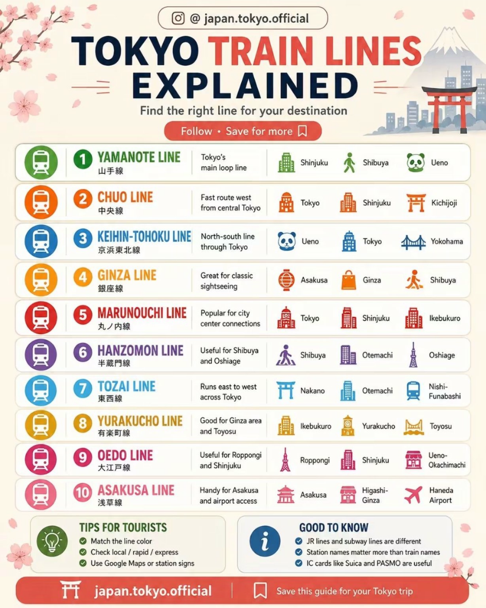

🛍️
Asakusa & Sensō-ji
📍 טוקיו
אחד האזורים המסורתיים והמפורסמים בטוקיו. מקדש Sensō-ji הוא המקדש הבודהיסטי העתיק בעיר. בדרך אליו עוברים ברחוב Nakamise, שוק עמוס בדוכנים קטנים של מזכרות, ממתקים ומוצרים יפניים מסורתיים.
EK2269 / FZ1636 · יציאה מנתב״ג. מומלץ להגיע לשדה עם מרווח נוח.
קונקשן של 3:50 שעות. אין צורך להעמיס תוכניות — אוכל, התרעננות והגעה רגועה לשער הבא.
EK320 · מושב 48K · טיסת לילה לטוקיו.
⭐ חובה · להיות בשער בזמןהנחיתה ביפן כבר מופיעה בתחילת Day 2.
נחיתה בטוקיו, ביקורת גבולות ואיסוף מזוודות.
הגעה למלון, התארגנות ומנוחה קצרה. 2-6-2 Yoyogi, ליד South Exit של Shinjuku Station.

שיטוט ראשון באזור שינג׳וקו, ארוחת ערב ואורות העיר.
בדיקת ראייה, בחירת מסגרת והזמנת משקפיים.
התחנות ייפתחו לפי הסדר שתכננו ליום הזה.
שער הרעם והכניסה הסמלית לאסקוסה.
רחוב שוק מסורתי עם דוכנים, מזכרות וממתקים.

המקדש הבודהיסטי המפורסם של טוקיו.

מעבר לאזור Ueno והפסקת צהריים.
שוק רחוב תוסס — בגדים, קוסמטיקה, אוכל ומוצרים מקומיים.

אלקטרוניקה, משחקים, אנימה ואווירת ערב.
המלון שלנו בטוקיו · 4–8/11. 2-6-2 Yoyogi, Shibuya-ku · Standard Double Room with Queen Bed · Non-Smoking · ארוחת בוקר + Wi-Fi. מיקום מצוין ליד South Exit של Shinjuku Station.
התחנות ייפתחו לפי הסדר שתכננו ליום הזה.

מקדש שינטו בתוך יער גדול בלב העיר.
Takeshita Street והרחובות מסביב.
שדרה אלגנטית עם אדריכלות, בתי קפה וחנויות.

מעבר החצייה האייקוני של טוקיו.
נחליט בהמשך בין Tokyo Metropolitan Government Building, Roppongi Hills Tokyo City View או Shibuya Sky.
המלון שלנו בטוקיו · 4–8/11. 2-6-2 Yoyogi, Shibuya-ku · Standard Double Room with Queen Bed · Non-Smoking · ארוחת בוקר + Wi-Fi. מיקום מצוין ליד South Exit של Shinjuku Station.
התחנות ייפתחו לפי הסדר שתכננו ליום הזה.

שוק דגים, סכינים, כלי מטבח, תה ודוכנים. מגיעים גם כדי לראות ולחוות.

שיטוט באזור הקניות האלגנטי ובתי הכלבו.

עצירה קצרה באזור החפיר והגנים.
חזית התחנה ההיסטורית והאזור האלגנטי לקראת ערב.
המלון שלנו בטוקיו · 4–8/11. 2-6-2 Yoyogi, Shibuya-ku · Standard Double Room with Queen Bed · Non-Smoking · ארוחת בוקר + Wi-Fi. מיקום מצוין ליד South Exit של Shinjuku Station.
התחנות ייפתחו לפי הסדר שתכננו ליום הזה.
המסלול נשאר קבוע: מגיעים ל-Odawara ושם אוספים את הרכב. את סוג הרכבת נבחר לפי החשק.

אגם, נוף הררי ואפשרות לתצפית לכיוון פוג׳י.

מקדש בתוך היער ושער Torii על שפת האגם.
מקום הלינה באזור Hakone / Fuji עדיין לא נקבע.
התחנות ייפתחו לפי הסדר שתכננו ליום הזה.

עמק געשי פעיל. ביום בהיר יש גם תצפיות טובות לכיוון פוג׳י.
הרכבל מעל האזור הגעשי.
אם הראות טובה — עדיפות לתצפיות פוג׳י באזור האגם.

מוזיאון פתוח של פסלים ואמנות בנוף ההרים.
התחנות ייפתחו לפי הסדר שתכננו ליום הזה.
החזרת הרכב באזור Odawara.
נסיעה לקיוטו.

ערב ראשון ברובע המסורתי של קיוטו.
Moderate Double · Non-Smoking · Breakfast + Wi-Fi. כ־7 דקות מ-Shijo/Karasuma וכ־10 דקות מ-Nishiki.
התחנות ייפתחו לפי הסדר שתכננו ליום הזה.

מקדש מפורסם על צלע הר עם תצפית על העיר.
רחובות היסטוריים עם בתי עץ, חנויות ותה.
שיטוט באזור ההיסטורי.
הרובע המסורתי יפה במיוחד לקראת ערב.
סמטת מסעדות ליד נהר Kamo.
המלון שלנו בקיוטו. Moderate Double · Non-Smoking · Breakfast + Wi-Fi. כ־7 דקות מ-Shijo/Karasuma, כ־10 דקות מ-Nishiki וכ־17–18 דקות מ-Kawaramachi/Pontocho.
התחנות ייפתחו לפי הסדר שתכננו ליום הזה.
Nara הועברה ל-14/11. את היום הזה נשלים באטרקציות Kyoto, כולל אפשרות להעביר לכאן את Fushimi Inari כדי לא להעמיס על יום המעבר.
המלון שלנו בקיוטו. Moderate Double · Non-Smoking · Breakfast + Wi-Fi. כ־7 דקות מ-Shijo/Karasuma, כ־10 דקות מ-Nishiki וכ־17–18 דקות מ-Kawaramachi/Pontocho.
נגיע לאזור Arashiyama ונשלב במבוק בלי לבזבז זמן על עומס. אם ה-Bamboo Grove המרכזי סביר נעבור בו בקצרה; אם עמוס מדי נמשיך ל-Giōji או Adashino Nenbutsu-ji לחוויה שקטה יותר.
מקדש וגנים בסמוך ליער הבמבוק.

מקדש הזהב — אחד האתרים האייקוניים בקיוטו.

שוק מקורה ארוך עם אוכל, תה, תבלינים וכלי מטבח.
המלון שלנו בקיוטו. Moderate Double · Non-Smoking · Breakfast + Wi-Fi. כ־7 דקות מ-Shijo/Karasuma, כ־10 דקות מ-Nishiki וכ־17–18 דקות מ-Kawaramachi/Pontocho.
התחנות ייפתחו לפי הסדר שתכננו ליום הזה.
המזוודות הגדולות נשלחות Kyoto → Osaka באותו יום. נשארים עם trolley אחד כגיבוי.
רכבת התיירות המיוחדת. יציאה 10:55, הגעה 11:31 — כ-36 דקות. Twin Seats מומלצים לזוג.
מכניסים את ה-trolley ללוקר בתחנה ויוצאים לטייל בידיים חופשיות.

Nara Park → Tōdai-ji → ארוחת צהריים. Naramachi רק אם נשאר זמן וחשק.
אוספים את ה-trolley ולוקחים Kintetsu Express / Rapid Express רגילה וישירה ל-Osaka-Namba, בערך 40 דקות. אין טעם להמתין ל-AONIYOSHI המאוחרת.
Check-in לאחר ההגעה מ-Nara. כרגע שתי הזמנות פעילות: Hotel Royal Classic Osaka — מחובר ישירות ל-Namba Exit 12 והמועמד המוביל; או Cross Hotel Osaka — קרוב במיוחד ל-Dotonbori. אחרי ההתארגנות אפשר לצאת לערב קל ב-Dotonbori.
שתי הזמנות פעילות כרגע: Hotel Royal Classic Osaka (מחובר ל-Namba Exit 12 — המועמד המוביל) או Cross Hotel Osaka (קרוב במיוחד ל-Dotonbori). נחליט לפני מועד הביטול.
Kyoto Station → Kintetsu-Nara → Nara Park / Tōdai-ji → Kintetsu-Nara → Osaka-Namba.

הטירה והפארק.
מרכז מודרני, קניונים וגורדי שחקים.
רחוב קניות מקורה שמתחבר ל-Dotonbori.

ערב נוסף לאוכל ושיטוט.
שתי הזמנות פעילות כרגע: Hotel Royal Classic Osaka (מחובר ל-Namba Exit 12 — המועמד המוביל) או Cross Hotel Osaka (קרוב במיוחד ל-Dotonbori). נחליט לפני מועד הביטול.
התחנות ייפתחו לפי הסדר שתכננו ליום הזה.
Namba → Shin-Osaka → Shinkansen ל-Tokyo. לא למהר לצאת מוקדם מדי — זה יום מעבר, אבל נשאר לנו אחר צהריים וערב מלאים במרכז Tokyo.
2-6-21 Kyobashi, Chuo-ku. Double Room · Non-Smoking · Breakfast + Wi-Fi. המלון ליד Kyobashi Station וכ־7 דקות הליכה מ-Tokyo Station — מיקום מצוין ללילה האחרון וליציאה ל-Narita למחרת.

במקום עוד “סתם קניות”, נטייל באזור שמחבר Edo ישנה עם Tokyo המודרנית: Nihonbashi Bridge, הרחובות הוותיקים ו-COREDO Muromachi. מתאים מאוד לשעתיים רגועות אחרי הנסיעה.

השלמות וקניות אחרונות בלי להתרחק מהמלון: Gransta בתוך/סביב התחנה, Tokyo Character Street ו-Daimaru. זה גם מקום טוב לקנות מתנות, ממתקים ופריטים לדרך.
לסיום הטיול: תצפית מה-Rooftop Garden של KITTE לכיוון בניין Tokyo Station, ואז הליכה קצרה ב-Marunouchi Naka-dori. בנובמבר האזור מקבל אווירת ערב יפה במיוחד; אם התאורה העונתית כבר פעילה בתאריכים שלנו — זה בונוס.
Ginza קרובה מאוד ל-Kyobashi, ולכן אם יש חנות או קנייה ספציפית שלא הספקנו — זה הזמן. אחרת עדיף להישאר במסלול Nihonbashi → Tokyo Station → Marunouchi ולא לחזור על יום 7.
המלון ללילה האחרון. 2-6-21 Kyobashi · Double Room · Non-Smoking · Breakfast + Wi-Fi. ליד Kyobashi Station וכ־7 דקות הליכה מ-Tokyo Station — נוח גם להגעה מה-Shinkansen וגם ליציאה ל-Narita.
remm Tokyo Kyobashi → Nihonbashi → Tokyo Station → KITTE / Marunouchi
פתח את מסלול היום ↗ארוחת בוקר במלון, Check-out והשארת מזוודות אם צריך עד היציאה ל-Narita. המיקום ליד Tokyo Station מאפשר לשמור את היום האחרון פשוט ונוח.
לפי מה שנשאר ומה שמתחשק.
בדיקת ראייה, מסגרת ומשקפיים. אפשר לשלב מוקדם יותר בטיול ולשמור את היום הזה לאיסוף.
להשאיר מרווח נדיב לנסיעה ולבידוק.
EK321 Narita → Dubai.
התחנות ייפתחו לפי הסדר שתכננו ליום הזה.
אחד האזורים המסורתיים והמפורסמים בטוקיו. מקדש Sensō-ji הוא המקדש הבודהיסטי העתיק בעיר. בדרך אליו עוברים ברחוב Nakamise, שוק עמוס בדוכנים קטנים של מזכרות, ממתקים ומוצרים יפניים מסורתיים.
אזור עממי ותוסס. Ameyoko הוא שוק רחוב צפוף וססגוני עם בגדים, נעליים, קוסמטיקה, ממתקים, דגים, תבלינים ואוכל רחוב. שווה במיוחד למי שאוהב שווקים גם כחוויה ולא רק בשביל אוכל.
Akihabara התחילה כרובע אלקטרוניקה והפכה למרכז ענק של אנימה, מנגה, משחקים ואספנות. לצד חנויות אלקטרוניקה גדולות יש בניינים שלמים עם משחקי רטרו, דמויות, קלפים ומוצרים יד שנייה. גם מי שלא חובב אנימה נהנה מהאורות ומהאווירה.
מקדש Meiji הוא אחד מאתרי השינטו החשובים בטוקיו ונמצא בתוך יער גדול שמרגיש מנותק מהעיר למרות הקרבה ל-Harajuku. לעיתים אפשר לראות במתחם טקסים וחתונות שינטו מסורתיות. ההליכה דרך שערי ה-Torii והיער היא חלק משמעותי מהביקור.
Harajuku הוא מרכז של אופנה צעירה, תרבות רחוב וחנויות קטנות. Takeshita Street הוא הרחוב הכי צבעוני וצפוף, בעוד Omotesando הסמוכה מרגישה אלגנטית ובוגרת יותר. השילוב ביניהם נותן שני צדדים שונים לגמרי של אותו אזור.
Omotesando היא שדרה רחבה ומטופחת שמחברת את אזור Meiji/Harajuku לעולם של אדריכלות, אופנה ובוטיקים יוקרתיים. היא מהווה ניגוד מעניין ל-Takeshita Street הצבעונית והצעירה שנמצאת כמה דקות ממנה.
אחד האזורים שחייבים לראות בטוקיו. כאן נמצא Shibuya Crossing, מעבר החצייה האייקוני, לצד מסכים, מסעדות, חנויות ואווירה עירונית אינטנסיבית.
Shibuya Sky נמצאת מעל Shibuya Scramble Square ונותנת תצפית פתוחה ומרשימה מעל Shibuya והעיר. זו חוויה אייקונית יותר מתצפית רגילה, אבל היא דורשת יותר תכנון בגלל כרטיסים ושעות מבוקשות.
Tsukiji Outer Market נשאר אחד המקומות הטובים בטוקיו להרגיש את תרבות שוק האוכל, גם לאחר שהמסחר הסיטונאי עבר ל-Toyosu. הסמטאות מלאות בדגים, סכינים, תה, אצות, Tamagoyaki, פירות ומנות קטנות, כך שגם מי שלא רוצה דג נא ימצא הרבה מה…
Ginza הוא רובע הקניות והבילוי היוקרתי של טוקיו, עם בתי כלבו, בוטיקים, גלריות ומסעדות. גם בלי קניות יוקרתיות יש מה לראות: מבנים מעניינים, חנויות דגל, חנות כלי הכתיבה Itoya וקומות אוכל מרשימות בבתי הכלבו.
הארמון הקיסרי נמצא בשטח שבו עמדה טירת Edo, בלב טוקיו. רוב מתחם המגורים אינו פתוח באופן חופשי, אבל החפירים, חומות האבן, אזור Nijubashi והגנים המזרחיים נותנים תחושה של ההיסטוריה והמרחב.
תחנת הרכבת ההיסטורית של טוקיו והאזור העסקי האלגנטי שסביבה. מומלץ לראות את חזית הלבנים האדומות ולהסתובב באזור בשעות הערב.
שינג'וקו מרגיש כמו עיר בתוך עיר: תחנת רכבת עצומה, גורדי שחקים במערב, קניות סביב התחנה וחיי לילה במזרח. Kabukicho ו-Golden Gai נמצאים בצד המזרחי, בעוד בניין ממשלת טוקיו והתצפית החינמית נמצאים במערב.
נקודת התחבורה המרכזית בדרך להאקונה. כאן נרד מהרכבת מטוקיו, נאסוף את הרכב, ובהמשך נחזיר אותו לפני העלייה ל-Shinkansen לקיוטו.
אזור הררי ונופש הידוע במעיינות חמים, אגמים, טבע ותצפיות לפוג'י. מטרת העצירה היא להכניס לטיול יומיים של טבע ורוגע בין הערים הגדולות.
Lake Ashi הוא אחד הסמלים של Hakone, אגם הררי שנוצר באזור געשי ומוקף נוף ירוק. ביום בהיר אפשר לקבל ממנו תצפית לכיוון Fuji, ועל שפתו נמצא Hakone Shrine עם שער ה-Torii האדום. אפשר לשלב הליכה, עצירה לתצפית או שיט קצר.
מקדש שינטו בתוך היער לצד Lake Ashi. אחד הסמלים שלו הוא שער Torii אדום שנמצא ממש על שפת האגם.
Owakudani הוא עמק געשי פעיל ב-Hakone עם אדים, ריח גופרית ונוף דרמטי שנוצר בעקבות פעילות געשית. ביום בהיר אפשר לקבל מכאן גם תצפית לכיוון Fuji. הביצים השחורות המבושלות במים הגעשיים הן אחד הסמלים המקומיים.
רכבל שעובר מעל האזור הגעשי ומחבר חלקים שונים של האקונה. מעבר לאמצעי תחבורה, הוא אטרקציה בזכות הנופים.
אם מזג האוויר בהיר, נשתמש ברכב כדי לצאת לכיוון Lake Kawaguchiko וחמשת אגמי פוג'י. כאן פוג'י הוא ממש מרכז הנוף ולעיתים מקבלים תצפיות פתוחות ומרשימות במיוחד.
Gion הוא רובע מסורתי המזוהה עם בתי תה, machiya מעץ ותרבות הגיישות של קיוטו. הרחובות סביב Hanamikoji ו-Shirakawa נותנים תחושה היסטורית, במיוחד לקראת ערב, אבל זה עדיין אזור מגורים ועבודה ולא אתר שעשועים.
Kiyomizu-dera הוא אחד המקדשים החשובים והיפים בקיוטו, בנוי על מורדות Higashiyama ומציע תצפית רחבה על העיר. הדרך אליו דרך Ninenzaka ו-Sannenzaka היא חלק מרכזי מהחוויה, עם בתי עץ מסורתיים, בתי תה וחנויות.
האזור ההיסטורי שסביב Kiyomizu-dera. רחובות Ninenzaka ו-Sannenzaka מלאים בבתי עץ, תה, קרמיקה, חנויות מסורתיות וממתקים.
סמטה צרה ומפורסמת ליד נהר Kamo, מלאה במסעדות וברים קטנים. מקום מצוין לסיים בו ערב בקיוטו.

אזור במערב קיוטו הידוע ב-Bamboo Grove, מקדשים, נהר והרים. בנובמבר צבעי הסתיו יכולים להפוך אותו ליפה במיוחד. מומלץ להגיע מוקדם.
Nishiki Market הוא רחוב שוק צר במרכז קיוטו עם יותר ממאה חנויות ומסעדות, ולכן זכה לכינוי 'המטבח של קיוטו'. הרבה חנויות מתמחות במוצר אחד בלבד – תה, חמוצים, סכינים, ממתקים, דגים, טופו או תוצרת מקומית – וחלקן פועלות באותה משפחה…

Fushimi Inari הוא מקדש שינטו חשוב בדרום קיוטו ומפורסם בזכות אלפי שערי Torii אדומים שמטפסים לאורך שבילי הר Inari. המקדש מוקדש לאינארי, אל הקשור לאורז ולשגשוג, ולכן ברחבי המתחם תראו גם פסלי שועלים, הנחשבים לשליחיו. שמות התורמים…
פארק Nara הוא מרחב ירוק גדול שבו מסתובבים איילי sika בחופשיות, והם הפכו לסמל העיר. הפארק מחבר בין כמה מהאתרים החשובים בנארה ולכן האיילים הם חלק מהדרך ולא האטרקציה היחידה.
Tōdai-ji הוא אחד המקדשים הבודהיסטיים החשובים ביפן והסיבה ההיסטורית המרכזית להגיע לנארה. אולם Daibutsuden העצום מכיל פסל בודהה ברונזה ענק, והמבנה עצמו מרשים מאוד בקנה המידה שלו.
Kuromon הוא שוק מקורה באוסקה באורך של כ-600 מטר ובו בערך 150 חנויות. מלבד דגים ופירות ים יש גם בשר, פירות, ממתקים, כלי בית ודוכני אוכל. הוא מתאים מאוד לטעימות ולשיטוט ולא רק לארוחה.
Namba הוא מרכז התחבורה, הקניות והבילויים של דרום Osaka. Dotonbori, Shinsaibashi ו-Kuromon נמצאים כולם בטווח הליכה, ולכן זה אזור מצוין לרכז בו ערב של אוכל ושיטוט.
Dotonbori הוא אזור הבילויים והאוכל המזוהה ביותר עם Osaka, סביב התעלה ובמרכז Namba. בלילה האזור מתמלא שלטי ניאון, מסעדות, דוכנים ואנשים, כולל Glico Running Man המפורסם. זו אחת הדוגמאות הטובות לאופי הרועש והכיפי של אוסקה.
טירת Osaka נבנתה לראשונה בסוף המאה ה-16, נהרסה ונבנתה מחדש כמה פעמים, והמבנה הנוכחי הוא שחזור מודרני. בפנים יש מוזיאון, אבל סביב הטירה יש פארק גדול, חפירים וגנים, ולכן אפשר ליהנות מאוד גם בלי להיכנס.
מרכז מודרני של אוסקה עם גורדי שחקים, קניונים ותחנות רכבת ענקיות. אפשר לשלב תצפית גבוהה על העיר.
Shinsaibashi הוא אחד מאזורי הקניות המרכזיים של Osaka, עם רחוב מקורה ארוך שמוביל כמעט ישירות ל-Dotonbori. יש בו שילוב של מותגים בינלאומיים, אופנה יפנית, קוסמטיקה ובתי קפה.
מטרה: לעשות משקפיים בטוקיו. מומלץ לשלב ביום שינג׳וקו ולהקצות 1.5–2 שעות לבדיקה, מסגרת ועדשות. אם המשקפיים אינם מוכנים במקום, להשאיר חלון איסוף בהמשך השהות בטוקיו.
המוזיאון הפתוח של Hakone מציג פסלים ואמנות בתוך פארק גדול על רקע ההרים, לצד גלריות מקורות. זה מקום שמרגיש יותר כמו טיול בפארק אמנות מאשר ביקור במוזיאון רגיל.
נשאר בתכנון. מקום הלינה באזור האקונה/פוג׳י עדיין לא נקבע, ולכן המסלול נשאר גמיש בין Hakone לבין Kawaguchiko.
נוסף למסלול קיוטו כאטרקציית חובה, עם שילוב לפי הסדר הגאוגרפי של אותו יום.
Gyukatsu – בקר מצופה ומטוגן שממשיכים לצלות על אבן חמה.
סושי בהזמנה ממסך; אפשר לבחור גם מנות מבושלות.
ראמן מוכר עם מרק קל יחסית.
Tonkatsu יפני – בשר מצופה ומטוגן עם אורז וכרוב.
סושי נגיש ליד התחנה, כולל אפשרויות מבושלות.
Okonomiyaki מפורסם באזור Dotonbori.
רשת אוסקאית מפורסמת בלחמניות מאודות עם בשר.
נחיתה בטוקיו, ביקורת גבולות ואיסוף מזוודות.
הגעה למלון ומנוחה. לא להעמיס את היום הראשון.
JINS היא רשת משקפיים יפנית גדולה שבה ניתן לבחור מסגרת, לבצע בדיקת ראייה ולהזמין עדשות במקום. המטרה שלנו היא לעשות זאת בתחילת השהות בטוקיו כדי להשאיר זמן לאיסוף.
שער הרעם האדום הענק הוא הסמל של Asakusa והכניסה המפורסמת ל-Sensō-ji. הפנס האדום הגדול במרכז הוא אחת מתמונות החובה של טוקיו.
רחוב קניות מסורתי באורך של כמה מאות מטרים המוביל מ-Kaminarimon אל Sensō-ji. הדוכנים מוכרים ממתקים יפניים, מניפות, מזכרות, עבודות יד וחטיפים.
סנסו-ג׳י הוא המקדש הבודהיסטי העתיק ביותר בטוקיו ואחד הסמלים של Asakusa. הדרך אליו דרך Kaminarimon ו-Nakamise היא חלק מהחוויה, לא רק אמצעי להגיע למקדש: עוברים בין שערים, דוכנים, ממתקים מסורתיים וחנויות קטנות שממחישות צד ישן…
Ueno משלב פארק עירוני גדול, מוזיאונים ושוק רחוב עממי. פארק Ueno נמצא ליד כמה מהמוזיאונים החשובים בעיר, וממש בסמוך נמצא Ameyoko, כך שקל לעבור מטבע ותרבות לשוק, אוכל וקניות באותו אזור.
שוק רחוב תוסס — בגדים, קוסמטיקה, אוכל ומוצרים מקומיים.
מעבר החצייה של Shibuya הוא אחד הסמלים של טוקיו המודרנית. בזמן האור הירוק הולכי רגל חוצים מכל הכיוונים בבת אחת, כשמסביב מסכי ענק, חנויות ותחנת Shibuya. הפסל של Hachiko נמצא ממש ליד וקל לשלב את שניהם באותה עצירה.
Tokyo Station היא גם מרכז תחבורה חשוב וגם אתר בפני עצמו. חזית הלבנים האדומות בצד Marunouchi פונה לרובע עסקים מודרני ולכיוון הארמון הקיסרי; בתוך התחנה יש מתחמי אוכל, חנויות ו-Gift shops רבים.
נסיעה ברכבת; הרכב נאסף רק לאחר ההגעה לאזור.
מקום הלינה באזור Hakone / Fuji עדיין לא נקבע.
Kawaguchiko הוא אחד מחמשת אגמי Fuji ואחד המקומות הפופולריים לצפות בהר מקרוב. בנובמבר האזור ידוע גם בשלכת, אבל איכות הביקור תלויה מאוד בראות ובעננות.
החזרת הרכב באזור Odawara.
נסיעה לקיוטו.
רחובות היסטוריים עם בתי עץ, חנויות ותה.
טיול יום ללא החלפת מלון.
אופציה לרחובות מסורתיים ובתי קפה.
ערב חופשי.
Arashiyama הוא רובע טבע פופולרי במערב קיוטו, במיוחד בעונת השלכת של המחצית השנייה של נובמבר. יער הבמבוק הוא רק חלק מהאזור: סביבו נמצאים Tenryu-ji, גשר Togetsukyo, הנהר, חנויות ומסעדות. ככל שממשיכים צפונה לכיוון Okusaga האווירה…
Tenryu-ji הוא מקדש זן מרכזי ב-Arashiyama והחשוב מבין מקדשי הזן באזור. הגן שלו תוכנן כך שההרים שמאחור משתלבים בנוף, והוא מתחבר בצורה טבעית למסלול לכיוון יער הבמבוק. זה מקום טוב לקבל גם מקדש וגם גן יפני בלי להוסיף נסיעה.
Kinkaku-ji, מקדש הזהב, הוא אחד הסמלים המפורסמים של קיוטו. הביתן המצופה זהב ניצב לצד בריכה ומשתקף במים, והביקור ממשיך במסלול מסודר דרך הגן. המקום פוטוגני מאוד אך יחסית קומפקטי.
מעבר לקראת Check-in.
Shinkansen לטוקיו.
אם מזג האוויר מאפשר — תצפית לפוג׳י מהחלון.
חזרה לטוקיו.
זמן לדברים שלא הספקנו בתחילת הטיול.
לפי מה שנשאר ומה שמתחשק.
להשאיר מרווח נדיב לנסיעה ולבידוק.
EK321 Narita → Dubai.
התצפית בבניין ממשלת טוקיו בשינג'וקו נותנת מבט רחב על המטרופולין מגובה של כ-200 מטר. היתרון הגדול מבחינתנו הוא שאין צורך לבנות את היום סביב הזמנה ל-Shibuya Sky, והיא משתלבת באזור שבו ממילא יש לנו קניות ו-JINS.
Tokyo City View ב-Roppongi נותנת זווית מצוינת על מרכז טוקיו, ובמיוחד על Tokyo Tower. Roppongi עצמו משלב גורדי שחקים, אמנות, מסעדות ומתחמי קניות מודרניים.
Giōji הוא מקדש קטן ושקט באזור Okusaga, הידוע בגן טחב ירוק, במבוק ועצי מייפל. בנובמבר הניגוד בין הטחב הירוק לשלכת יכול להיות יפה במיוחד. האווירה כאן אינטימית בהרבה מה-Bamboo Grove המרכזי.
Adashino Nenbutsu-ji נמצא בחלק השקט יותר של Arashiyama/Okusaga וידוע באלפי פסלי אבן ובשביל במבוק קטן. הוא נותן שילוב של מקדש, אווירה היסטורית ובמבוק בלי העומס של היער הראשי.
📍 2-6-2 Yoyogi, Shibuya-ku, Tokyo
🛏️ Standard Double Room with Queen Bed · Non-Smoking · 2 adults
🍳 Breakfast + Wi-Fi included
💴 ¥311,616 · Pay later
🟢 Free cancellation before 1 Nov 2026
🚉 ליד South Exit של Shinjuku Station — בסיס מצוין לימי Tokyo וליציאה לכיוון Odawara/Hakone.
📍 50 Kasaboko Town, Shimogyo Ward, Kyoto 600-8494
🛏️ Moderate Double · Non-Smoking · 2 Adults · 4 nights
🍳 Breakfast + Wi-Fi · Afternoon Tea · selected drinks / welcome drink
💴 ¥159,420 · Pay later
📝 Non-smoking · High floor · Large bed
🟢 Free cancellation before 9 Nov 2026
🚇 כ־7 דקות מ-Shijo / Karasuma · כ־10 דקות מ-Nishiki Market · כ־17–18 דקות מ-Kawaramachi / Pontocho
📍 4-3-3 Namba · מחובר ישירות ל-Osaka Metro Namba Exit 12
🛏️ Standard Queen · Non-Smoking · 2 Adults
🍳 Breakfast + Wi-Fi included
💴 ¥109,398 · Pay later
🟢 Free cancellation before 12 Nov 2026
📍 2-5-15 Shinsaibashi-Suji · כ-3 דקות מ-Namba Exit 14 וכדקה מ-Dotonbori
🛏️ Double Room · Standard Floor · 2 Adults
🍳 Breakfast for two + Wi-Fi included
💵 US$648.74 · Pay later
🟢 Free cancellation before 8 Nov 2026
📍 2-6-21 Kyobashi, Chuo-ku, Tokyo 104-0031
🛏️ Double Room · Non-Smoking · Large Bed · 2 Adults · 1 night
🍳 Breakfast + Wi-Fi included
🟢 Free cancellation before 13 Nov 2026
🚄 קרוב ל-Tokyo Station — נוח להגעה מה-Shinkansen וליציאה ל-Narita.
מידע הרכבות נמצא בהמשך דף זה — גלול למטה. כולל רכבות Tokyo, אפשרויות Shinjuku → Odawara, ו-Cheat Sheet.
JPY ⇄ ILS. השער נשמר במכשיר וניתן לשינוי.
כתוב בעברית או באנגלית ופתח תרגום ליפנית. אין שימוש במצלמה.
הדבק או כתוב משפט ביפנית והשמע אותו בקול יפני באמצעות מנוע הדיבור של הטלפון.
דף עזר מהיר לקווים הרלוונטיים למסלול. לניווט בפועל נבדוק Google Maps בזמן אמת.
💡 כלל פשוט: Google Maps קובע את המסלול בפועל; בודקים קו, רציף ו-Exit בזמן אמת. Suica/PASMO מתאימים לרוב הנסיעות העירוניות.
דף עזר מהיר לקווים שהכי רלוונטיים למסלול שלנו. לניווט בפועל נשתמש ב-Google Maps בזמן אמת.
